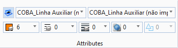
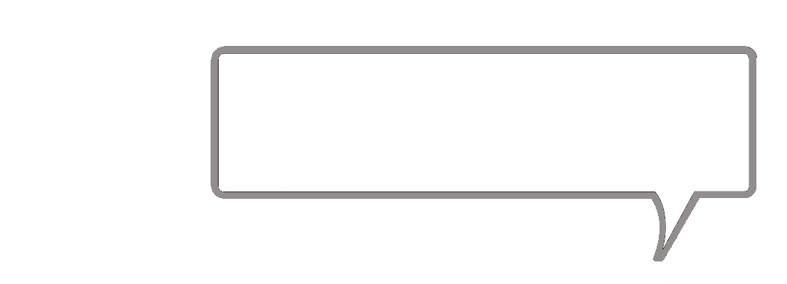
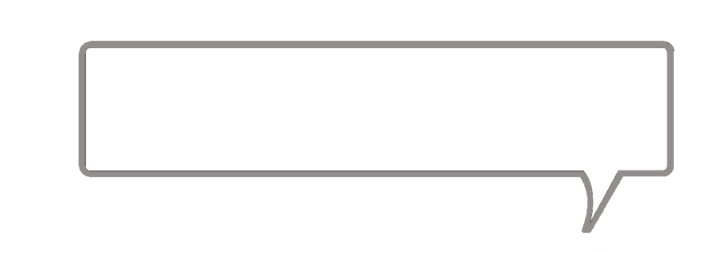
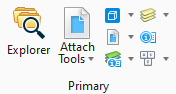
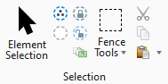

Vamos correr as ferramentas mais utilizadas no Workflow do OpenRoads. Para isso vai passando com o rato sobre os vários separadores ou grupos de ferramentas que aparecerem envolvidos a vermelho.


Ativa as preferencias do template ao desenhar um elemento
Mostra a lista de element template criados e abre o gestor de templates

Nivel que está activo no momento, pode ou não coincidir com o nivel do template activo

